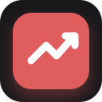
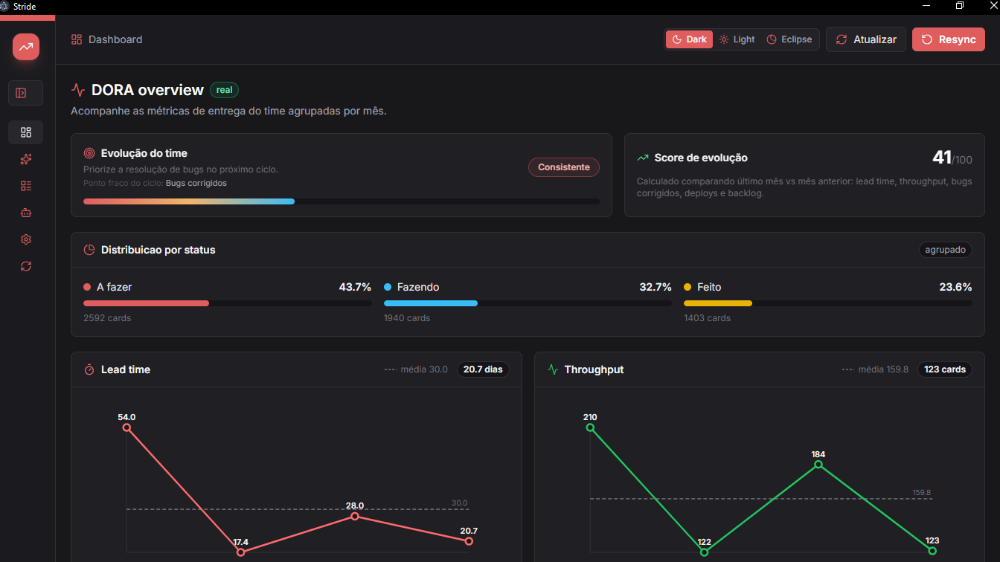
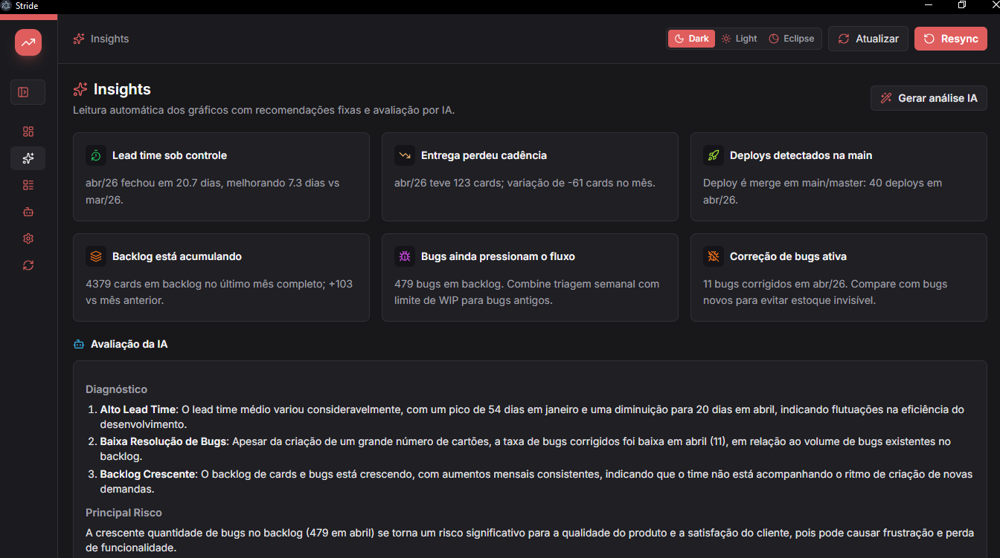
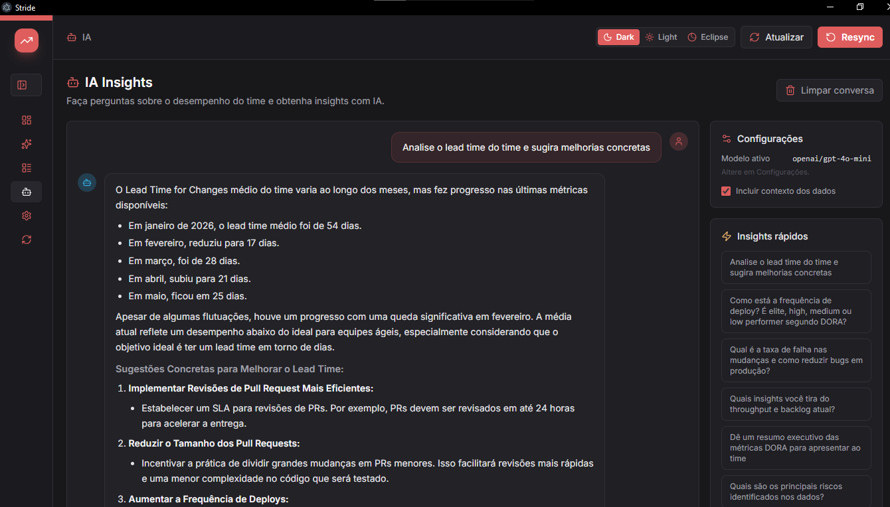

DDORA Metrics
Monthly charts for lead time, throughput, fixed bugs, open backlog, pull requests, and deployment frequency — the four DORA pillars in one view.

Stride DORA is a desktop dashboard that connects to Jira and GitHub and turns your raw data into DORA metrics: lead time, throughput, bug trends, pull requests, and deploys — grouped by month, updated on demand, stored locally.



Monthly charts for lead time, throughput, fixed bugs, open backlog, pull requests, and deployment frequency — the four DORA pillars in one view.
Groups work into To Do, Doing, and Done so you can see where demand builds up, spot bottlenecks, and track work in progress over time.
Ask questions about your team's performance in plain language. Get chart summaries, risk highlights, and practical next steps powered by AI.
Reads issues, types, statuses, creation/resolution dates, and bugs to calculate flow, backlog, and lead time.
Reads pull requests from the configured owner. Merges into main or master are counted as deploys.
Optional. When configured, it generates an executive review of the charts and recommends priorities.
Install Bun first from https://bun.sh.
Run this command from the project root:
powershell -ExecutionPolicy Bypass -File .\scripts\install.ps1When it finishes, open the Stride DORA shortcut created on your Desktop.
Run these commands from the project root:
chmod +x ./scripts/install.sh ./scripts/start-stride.sh
./scripts/install.shWhen it finishes, open the Stride DORA launcher created on your Desktop or app menu.
After installing, you can also start the desktop app from the terminal:
bun run dev:desktopUse tokens with the minimum required permissions. They are stored locally in this installation.
Open Settings and add Jira, GitHub, and optionally OpenRouter for AI insights.
Use Update to fetch new data or Resync to clear local data and synchronize from scratch.
Read the charts, inspect cards/PRs/deploys, and use insights to choose the next improvement priority.